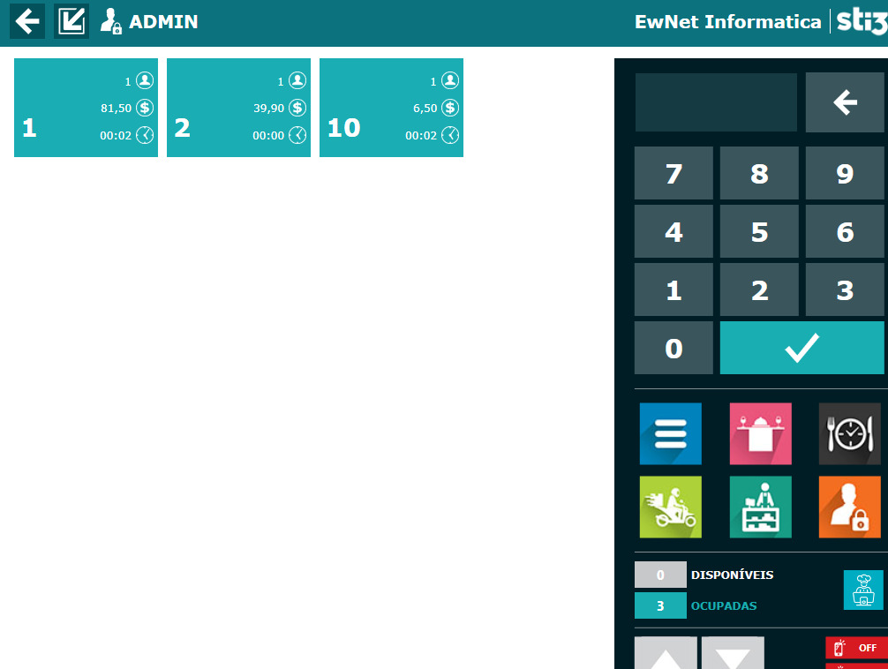
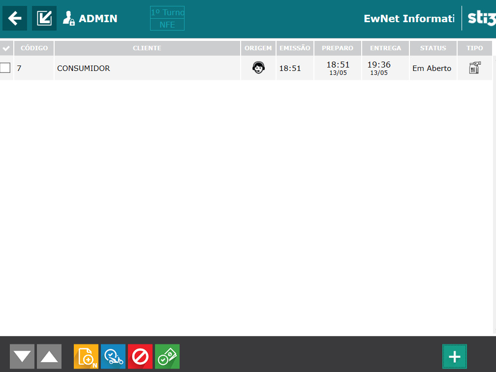

Mesas e Comandas
Agilize seu atendimento controlando os pedidos das Mesas e Comandas.
- Abertura por mesa ou cliente
- Divisão rápida de contas
- Transferência de itens
Controle de mesas e comandas, delivery integrado, ficha técnica, estoque, emissão fiscal e financeiro — tudo conectado em um sistema feito para a rotina intensa de quem trabalha com alimentação.
Tudo integrado, sem sistemas separados e sem retrabalho para a sua gestão.
Agilize seu atendimento controlando os pedidos das Mesas e Comandas.
Gestão dos pedidos recebidos por telefone ou via aplicativo com eficiência.
Controle os pedidos e a entrega dos pratos que são feitos diretamente no balcão.
Site e aplicativo de delivery com sua marca e do seu jeito.
Através do celular o garçom efetua os pedidos e as impressões são direcionadas.
Emissão de documentos fiscais atendendo as principais obrigatoriedades do varejo.
Identifica as chamadas através da Bina para agilizar os pedidos do delivery.
Controle de contas a pagar e receber, fluxo de caixa, DRE.
O sistema recebe o pedido do app, emite notificações e direciona para o preparo.
Cadastre a composição dos pratos e controle o estoque dos produtos.
Sistema preparado para utilização em monitores Touch-Screen.
Impressão de fichas individuais e crédito em cartão de consumo.
Utilize uma ou várias impressoras para agilizar seus processos.
Sistema integrado com uso de balanças, catracas e micro-terminal.
O sistema gera a senha para retirada de pedidos de forma sequencial ou aleatória.
Ofereça descontos e promoções programando horários para início e fim.
Indicação do tempo de permanência do cliente e ausência de consumo na mesa.
Configuração de produtos personalizados passo a passo. Cada etapa um ingrediente.
Não desenvolvemos um sistema genérico e depois adaptamos para restaurante. Desde o início, construímos junto com donos de restaurantes, bares e padarias — e cada detalhe foi testado na vida real, não no escritório.


O Painel de Delivery centraliza todos os pedidos do delivery, iFood e site próprio em uma única tela, organizados por status e tempo de espera. Chega de pular de tela em tela, chega de pedido atrasado e adeus confusão na hora de despachar com o motoboy.
Deixe os erros de pedido e a bagunça no estoque para trás. Fale com um de nossos especialistas e descubra o plano ideal para o seu negócio.
Com um sistema próprio para delivery, você para de pagar comissões que chegam até 30% por pedido — e coloca esse dinheiro de volta no seu bolso.
Centralize e gerencie pedidos de diferentes canais em uma única plataforma integrada.
Crie programas de fidelidade e ações promocionais personalizadas para manter seus melhores clientes.
Envie notificações no celular dos clientes sem depender de aprovações de plataformas de terceiros.
Delivery personalizado com sua marca, do seu jeito. Amplie sua presença e impulsione suas vendas.
O sistema de delivery oferece gestão de pedidos delivery de forma simplificada, sem comissão de venda — para quem não gosta de perder tempo nem dinheiro. Solução completa: cardápio digital, delivery e chatbot de atendimento.
Configure pelo sistema de delivery e receba os pedidos direto no seu WhatsApp — tudo do jeito que funciona melhor para o seu negócio.
Ofereça opções de personalização para seus clientes com complementos nos pedidos. Mais opções significam mais vendas e um ticket médio mais alto.
Cardápio intuitivo e fácil de navegar que aumenta a eficiência do seu negócio e oferece a melhor experiência para os seus clientes.
Amplie suas opções de entrega e atenda mais clientes oferecendo tanto delivery quanto retirada no local — flexível para qualquer operação.
A Ewnet configura o sistema de delivery completo para o seu restaurante — cardápio digital, sistema de delivery e chatbot de atendimento. Você só precisa vender.